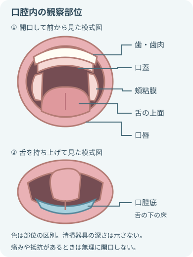

注意事項
始める前に方法を変える条件を探す
- 意識・気道防御
- 意識低下
- 咳反射の低下
- 嚥下機能の低下
- 含嗽ができない
- 呼吸状態と治療
- 呼吸不安定
- 酸素療法中
- NPPV中
- 人工呼吸管理中
- 出血リスク
- 出血傾向
- 血小板減少
- 抗凝固薬の使用
- 抗血小板薬の使用
- 粘膜と治療歴
- 口腔粘膜炎
- 放射線療法後
- 化学療法後
- 口腔内の手術創
- 歯と装置の確認
- 動揺歯
- 破折歯
- 義歯
- インプラント
- 矯正装置
- 実施方法を調整する条件
- 開口困難
- 疼痛
- 咬反射
- ケアへの拒否
中止してすぐ確認する変化
- 中止してすぐ確認
- むせ
- 連続する咳
- 湿性嗄声
- 呼吸苦
- SpO₂低下
- 中止して確認する全身の変化
- 顔色不良
- 意識の変化
- 反応の変化
- 中止して確認する口腔内の変化
- 持続する出血
- 強い痛み
- 粘膜損傷
- 見当たらない場合は中止して確認
- 歯
- 義歯
- 器具の一部
- 気管チューブや酸素デバイスの位置変化・アラーム
目的

- 除去する汚れの例
- 歯垢
- 食物残渣
- 痰
- 舌苔
- 清潔に保つ対象
- 歯
- 歯肉
- 粘膜
- 舌
- 義歯
- 早期に見つける変化
- 乾燥
- 疼痛
- 出血
- 腫脹
- 傷
- 口臭や不快感を減らし、会話・食事・休息を支える
- 本人ができるセルフケアを保つ
- 口腔ケアは肺炎予防に関わる援助の一つだが、実施だけで肺炎を必ず防げるとはしない。
- 合わせて評価
- 嚥下
- 咳嗽
- 体位
- 全身状態
実施前の観察

- 口蓋は口の天井。
- 頬粘膜は頬の内側。
- 舌の上面と、舌の下にある口腔底は別の部位として観察する。
- 唾液や義歯の状態も確認する。
- 図は器具を入れる深さを示さない。
入口から奥へ、左右を比べる
- 全身
- 意識
- 呼吸
- SpO₂
- 疲労
- 体位保持
- 機能
- 開口
- 咳
- 嚥下
- 含嗽
- 唾液を吐き出せるか
- 口唇
- 乾燥
- 亀裂
- 出血
- 口角炎
- 歯・歯肉
- 歯垢
- 動揺
- 破折
- う蝕
- 発赤
- 腫脹
- 出血
- 粘膜・舌
- 乾燥
- 発赤
- 白斑
- 潰瘍
- 舌苔
- 痰
- 義歯
- 装着
- 汚れ
- 破損
- 適合
- 粘膜の圧迫
- 本人の状態と習慣
- 痛み
- 口臭
- 本人の訴え
- 普段の方法
OHAT-Jを使う場合
- OHAT-Jの8項目
- 口唇
- 舌
- 歯肉・粘膜
- 唾液
- 残存歯
- 義歯
- 口腔清掃
- 歯痛
- 評価者間で判定をすり合わせる
- スコアだけで診断せず、変化と歯科相談の必要性を共有する
必要物品

- 口腔内を照らすライト
- 歯ブラシ
- 患者に適した歯磨剤
- コップ
- 水またはぬるま湯
- ガーグルベースン
- タオル
- 非滅菌手袋
- エプロン
- 飛散リスクに応じたマスク・眼の防護具
- 必要時、スポンジブラシまたは口腔ケア用綿棒
- 必要時に用いる清掃用具
- タフトブラシ
- 歯間ブラシ
- デンタルフロス
- 必要時、舌清掃用具
- 必要時、口腔保湿剤
- 必要時、吸引装置と吸引機能付き歯ブラシ
- 義歯がある場合、義歯用ブラシ
- 義歯がある場合、義歯容器
- 廃棄物袋
- 口腔状態と製品表示に合わせて選ぶ。用品の選択
- 歯ブラシ
- スポンジ
- 保湿剤
- 洗口液
- 歯磨剤
- 薬剤を含む製品を全員へ一律に使わない。
基本の手順
 説明し、できる動作を確認
説明し、できる動作を確認- 開始前に共有
- 本人確認
- 目的
- 方法
- 中止の合図
- 本人に確認
- 自分で磨ける場所
- 義歯の扱い
- 普段の用品
- 好み
 呼吸と嚥下に合わせて体位を整える
呼吸と嚥下に合わせて体位を整える- 可能なら上体を起こし、頭頸部を安定させる。
- 顎を上げない。
- 臥位では排液方向を考え、吸引をすぐ使える位置へ置く。
 義歯を外し、口腔内を観察
義歯を外し、口腔内を観察- 義歯は外し方を確認し、落下させない。
- ライトで観察
- 歯
- 歯肉
- 粘膜
- 舌
- 分泌物
- 動揺歯や出血部位を把握する。
 乾いた汚れを先に湿らせる
乾いた汚れを先に湿らせる- 乾燥した痰や痂皮へ少量ずつ水分または保湿剤を使う。
- 無理にはがさず、軟らかくなってから回収する。
 歯垢を歯ブラシで落とす
歯垢を歯ブラシで落とす- 歯ブラシを強く握らず、小さく動かす。
- 見ながら磨く場所
- 歯の外側
- かみ合わせ
- 歯の内側
- 歯と歯肉の境界
 粘膜と舌は傷つけずに清掃
粘膜と舌は傷つけずに清掃- 粘膜と舌の確認
- 頬粘膜
- 口蓋
- 舌
- 舌の下
- スポンジやガーゼの水分を絞る。
- 奥へ押し込まない。
- 汚れたら交換する。
 落とした汚れを口の外へ回収
落とした汚れを口の外へ回収- 含嗽できる人は吐き出す。
- 難しい人は手前へ集め、拭き取りや吸引で回収する。
- 多量の水を咽頭へ流さない。
 再観察し、安楽を整える
再観察し、安楽を整える- ケア後に再確認
- 出血
- 傷
- 汚れ
- 乾燥
- 疼痛
- 必要時は保湿し、義歯・体位・酸素機器を戻して反応を記録する。
含嗽できない人のケア

水分を入れる量より、回収できる量を考える
- 開始前に吸引装置の作動と接続を確認する
- スポンジや綿棒の余分な水分を絞る
- 口腔内へシリンジで多量の水を流し込まない
- 汚れを咽頭側へ押さず、手前へ集める
- 吸引管を深く入れず、粘膜へ長く押し当てない
- 短く区切りながら観察
- 咳
- むせ
- 呼吸
- 声
- SpO₂
次の判断条件に従う内容
- 吸引圧
- 器具の扱い
- カテーテルの扱い
吸引方法の判断
- 患者の状態
- 機器の表示
- 院内手順
義歯の扱い

義歯と口の中を別々に見る
- 本人の義歯であることと、外し方・戻し方を確認する
- 洗面器や水を張った容器の上など、落下・破損を防げる場所で洗う
- 義歯用ブラシで汚れを落とし、洗浄剤は製品表示に従う
- 熱湯や研磨性の強い用品を避ける
- 義歯を外した口腔粘膜を観察する。粘膜の確認
- 発赤
- 傷
- 圧迫部位
- 保管方法と夜間の装着は歯科指示・本人の計画を確認する
方法を変える場面
- 口腔粘膜炎・易出血
柔らかい器具と弱い力へ変更する。
報告する変化- 持続出血
- 潰瘍
- 白斑
- 強い痛み
- 動揺歯・破折歯：脱落と誤嚥の危険を共有し、強く磨かず歯科評価につなぐ
- 絶食・経管栄養
食べていなくても口腔ケアを省かない。
観察する所見- 乾燥
- 痰
- 舌苔
- NPPV・高流量酸素：ケア中の呼吸状態と休止方法を事前に確認し、治療を無断で中断しない
- 気管挿管中実施前に確認
- チューブ位置
- 固定
- カフ
- バイトブロック
- 口腔ケアと分ける操作
- 固定交換
- カフ圧調整
- これらの操作は、担当者と院内手順に従う。
- 気管切開
- 口腔ケアは必要。
- 次の管理は別手技として指示を確認する。
口腔ケアと分ける管理- 気管孔のガーゼ交換
- カニューレ
- カフ
- 側管
- 抗菌性洗口剤
人工呼吸中を含め一律のルーチンにしない。
使用前に確認- 適応
- 禁忌
- 濃度
- 使用法
報告・記録
すぐに報告する変化
- すぐに報告する呼吸・意識の変化
- 呼吸苦
- むせ
- 湿性嗄声
- SpO₂低下
- 意識変化
- すぐに報告する口腔内の変化
- 止まりにくい出血
- 強い痛み
- 粘膜損傷
- すぐに報告する歯・器具の異常
- 歯の動揺
- 歯の脱落
- 義歯の破損
- 義歯の紛失
- 器具の破損
- 器具の紛失
- 報告する所見
- 腫脹
- 膿
- 潰瘍
- 白斑
- 悪臭
- 急な口腔乾燥
- 報告する機器の異常
- 気管チューブ
- 酸素デバイス
- 経鼻チューブ
記録すること
- 実施内容の記録
- 実施方法
- 使用した器具
- 使用した製品
- 吸引の有無
- 実施前後の口腔内所見と全身状態
- 機能の記録
- 含嗽
- 嚥下
- 咳
- セルフケア能力
- 管理状況の記録
- 義歯の装着
- 義歯の保管
- 医療機器の確認
- 反応と対応の記録
- 実施中の反応
- 実施後の反応
- 報告内容
- 対応
出典
- 米国国立がん研究所（NCI）「Lip and Oral Cavity Cancer Treatment (PDQ)」口腔の構造
- 厚生労働省「介護職員等による日常的な口腔ケア」関連研修資料
- 日本歯科医師会「要介護者への口腔ケア」
- Matsuo K, Nakagawa K. Reliability and Validity of the Japanese Version of the Oral Health Assessment Tool (OHAT-J). 2016
- SHEA/IDSA/APIC「Strategies to prevent VAP, VAE, and NV-HAP: 2022 Update」
- WHO「Standard precautions for the prevention and control of infections」2022